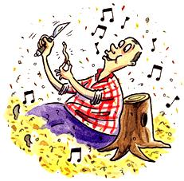

Whittling a tune beats the
sound of a table saw any day.
You've heard of Whistler's Mother? Well, if I had painted a picture of my mother, they would have called it Whittler's Mother, because I like to whittle.
Some folks whittle just to have something to do with their hands - a man's version of knitting. Except, instead of a sweater, they end up with a pile of kindling. Which isn't all bad when there's a stove or fireplace around. But since I installed a gas furnace I've had the warmest barn in the county, what with all the gunny sacks full of wood - shavings lining the walls.
But I'm not just making wood chips when I whittle. I'm looking for something. I'm a firm believer that every stick has something inside it that wants to come out - even if it's only a thinner, slimmer version of itself. When I whittle a chunk of wood, it's like laying back in a fresh green field on a summer day and study ing clouds to see what stories they have to tell. I slowly unwrap the bark cover, like a bride-to-be at a bridal shower, holding her breath, waiting to say oooh! Then I study the stick until I see something in the grain and the nubs and the knots - a bird or a troll or just a smooth and graceful shape.
One day my grandson Chunk stopped by. I like that name. His girlfriend gave it to him. She used to call him flunk until he put on a few extra pounds. I think he looks good with the extra insulation. I guess I've always seen a chubby man trying to get out of the skinny boy he used to be.
Anyhow, Chunk asked me to come along with him to pick up some cabinet doors for a home he was building.
"Besides," he shouted (Why do people talk louder to old folks? I'm getting older not deafer), "I thought you might like to see this guy's woodworking shop, seeing as how you like wood so much. Man, he has this system all laid out where he can take a stick of rough-cut lumber and run it through about ten different machines and in 20 minutes you got a cabinet door ready to varnish and hinge. Slick."
"I'll be glad to come with you, son," I replied.
Troth is, I find lumber sad and boring. People slice and cut it for maximum board-foot yield, tearing away through knots and curves and then milling the planks to make sure they stack up nice and neat and uniform.
"Hi, there!" the woodworker shouted. At least he had an excuse for shouting over the rumble of his machines and dust collection system. "Chunk tells me you like to work with wood."
"I do."
"Well, you're welcome to watch my operation if you want," the man invited in a friendly manner.
I nodded as he slipped something that looked like a jockstrap over his nose and a headset over his ears. Then he slid pieces of maple through one machine after another. He measured and sawed, sanded and routed, glued and stapled, moving from station to station until he lifted a finished cabinet door from the last machine, pulled off his mask and grinned like a magician waiting for applause.
"That sure is efficient," I said.
"That's the only way to turn a profit in this kind of business," the cabinetmaker explained, as he turned the piece over and over, admiring his work.
The wood on the door looked surprised and hard around the edges, like my wife after a perm.
"Anytime you need some help with a project, just come on in," the man suggested. "Be glad to give a hand."
"That's a kind offer," I replied, eyeing a piece of a birch warping and twisting its way out of the scrap barrel. "Do you mind if I take this?" I asked.
"Sure, help yourself."
"It reminds me of a story."
"Yeah?" The woodworker smiled. "What's the story?"
"This old man was out golfing. Shanked one into the rough. When he bent to pick up his ball, he noticed a frog. 'Hey, mister,' the frog said, 'I'm really a beautiful young woman under a spell. If you kiss me, I promise to satisfy your wildest desires.'
"The man slipped the frog into his pocket and tossed his ball hack onto the fairway.
"`Hey! Hey!' the frog shouted from deep in his jacket. 'I said I could satisfy your
'"I heard you,' the man said, 'but at my age, I'd rather have a talking frog."'
'`Cute," the carpenter said. "But, hey, you don't want that piece of scrap. Here, Let me get you a good piece."
"No, thanks," I replied. "I'd rather have a piece that talks to me."
|
 |
|
|